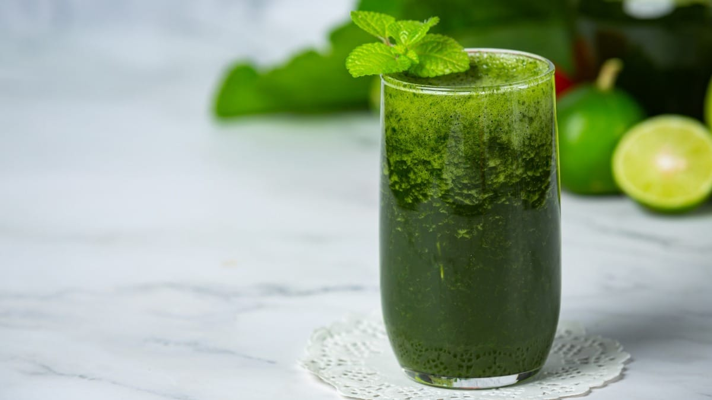

Smoothie Verde Detox

Smoothie detox de espinafre, pepino e maçã verde.
Ingredientes:
- 1 maçã verde
- 1 pepino pequeno
- 1 punhado de espinafre fresco
- 1/2 limão (suco)
- 1 pedaço pequeno de gengibre fresco
- Água ou água de coco a gosto
- Gelo a gosto
Modo de Preparo:
- No liquidificador, adicione a maçã verde, o pepino, o espinafre, o suco de limão e o gengibre.
- Adicione água ou água de coco para ajustar a consistência.
- Bata bem até ficar homogêneo e, se desejar, adicione gelo para um efeito refrescante.
- Sirva imediatamente e aproveite os benefícios detox dessa bebida!